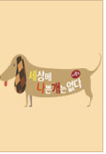

PROFILE

이름 : 신두유
출생 : 2014년 6월 6일
신체 : 65cm
성별 : 수컷
견종 : 스피츠
가족 : 아버지 크러쉬
방송 출현 :

세상에 나쁜 개는 없다 시즌2
2017.06.23
[바로보기]
도깨비 ost의 주인공!
세련되고 감각적인 R&B 소울의 대세 뮤지션
음원 깡패 크러쉬가 세나개에 떴다!
그런 크러쉬의 가족이자 친구이자 뮤즈인 ‘두유’
그.런.데
크러쉬 앞에선 한없이 순한 순둥이 두유가....
"악귀로 돌변한다!?"
예상치 못한 순간 드러나는 두유의 이중인격!
과연 두유의 실체는 밝혀질 것인가?
IMAGES